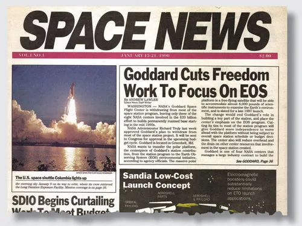
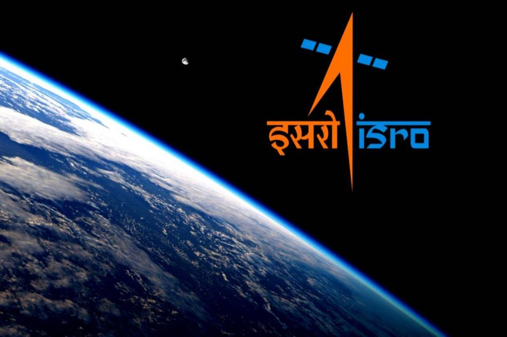
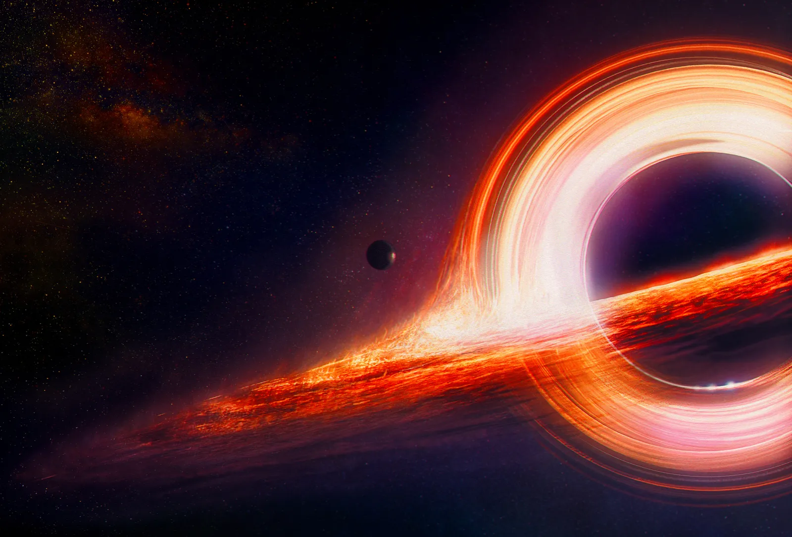
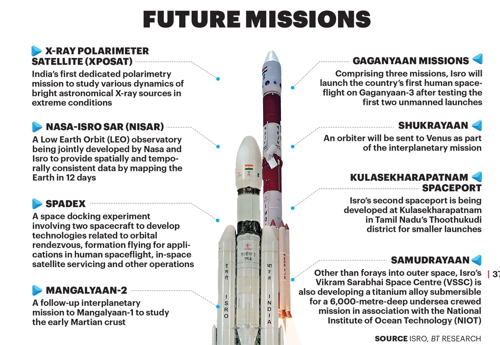
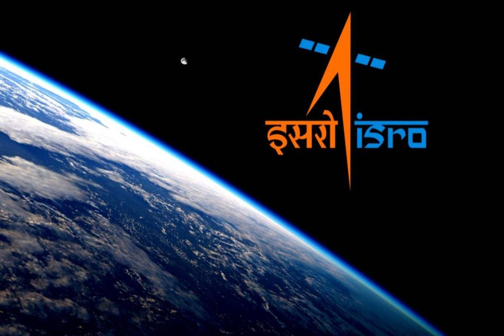
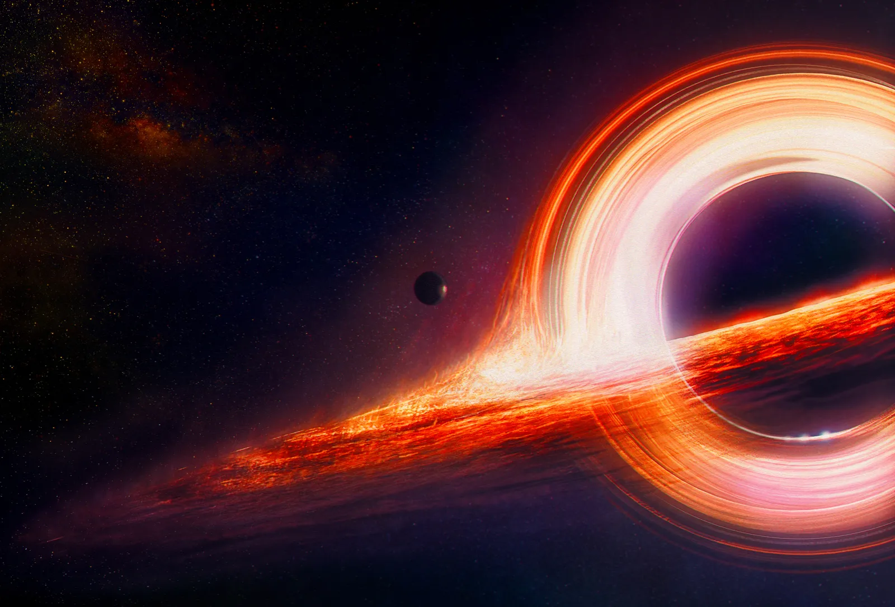
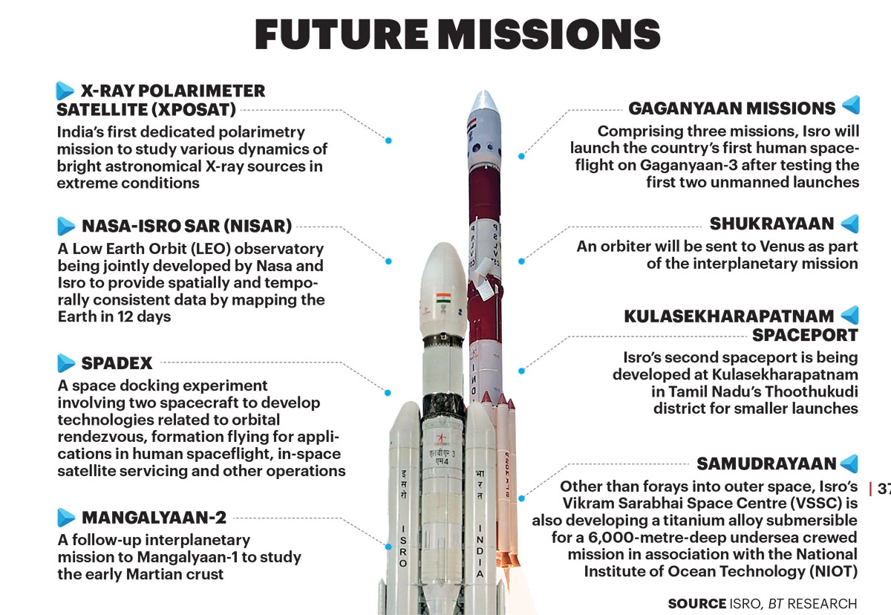

Welcome to Supernova - Space News Website
At Supernova, we bring you the latest and most fascinating news from the world of space exploration, astronomy, and beyond. Explore the wonders of the universe with us. From the latest space missions to groundbreaking discoveries about distant galaxies and exoplanets, we cover it all. Stay updated with our articles, images, and videos curated by our team of space enthusiasts and experts. Join our community of space enthusiasts and embark on a journey through the cosmos! Indian Space Research Organisation (ISRO) is the space agency of India. The organisation is involved in science, engineering and technology to harvest the benefits of outer space for India and the mankind. ISRO is a major constituent of the Department of Space (DOS), Government of India. The department executes the Indian Space Programme primarily through various Centres or units within ISRO. ISRO was previously the Indian National Committee for Space Research (INCOSPAR), set up by the Government of India in 1962, as envisioned by Dr. VikramA Sarabhai. ISRO was formed on August 15, 1969 and superseded INCOSPAR with an expanded role to harness space technology. DOS was set up and ISRO was brought under DOS in 1972.
Latest News
Space Missions
Astronomy Discoveries
Space Technology
Space Gallery
 




